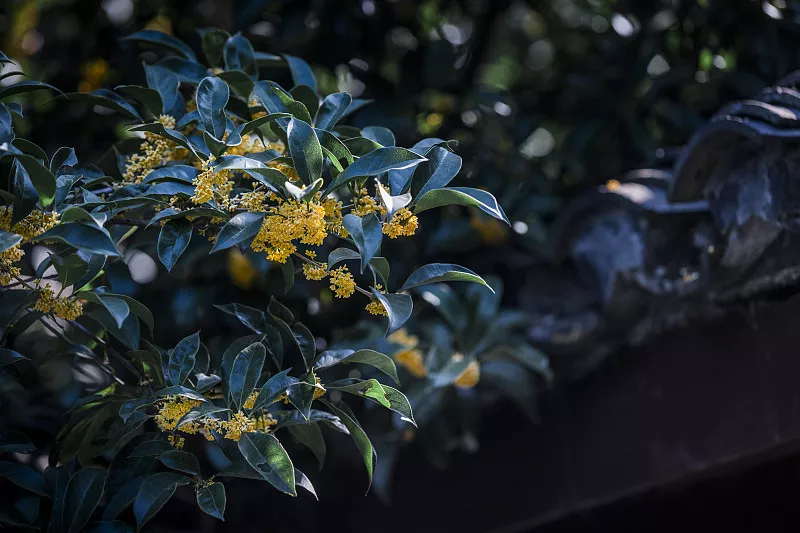
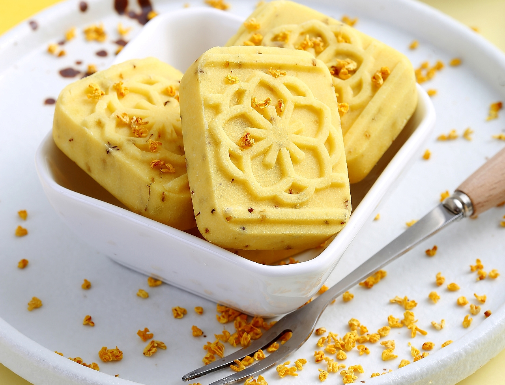
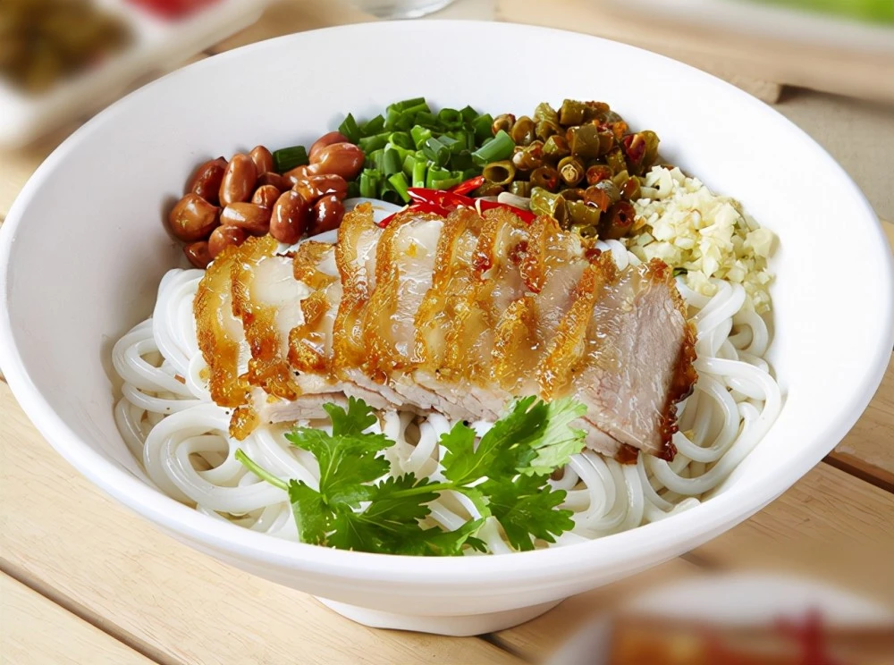

❤美食不可辜负，人间皆是浪漫❤
❤点击我来了解土特产叭❤
Home
美景
我要九月桂花树下的温润，我要古街长安不灭的灯火。我要你眼中恰似星河的璀璨，我要你日日陪伴着的朝霞与共。
——林北叶
桂花糕
已有四百多年历史。相传，在明朝末年，新都县城有个叫刘吉祥的小贩，从状元杨升庵桂子飘香的书斋中得到启发，将鲜桂花收集起来，挤去苦水，用蜜糖浸渍，并与蒸熟米粉、糯米粉、熟油、提糖拌合，装盒成型出售，取名桂花糕。三百多年来，继承制作桂花糕的糖果坊不断改进工艺，现以精制白糖、饴糖、面粉、糯米粉、菜油、蜜桂花等为制作原料，再按适当比例配好，经过蒸、炒、磨、拌、擀、匣、刀切等工序精制而成。该产品具有洁白如玉，清甜爽口，细腻化渣，桂香浓郁的特点。
 
我在云中独行，给人间的街灯撒上细盐，灯火朗照，盐粒里藏着我酿了一秋的甜。
土特产卡片介绍
马蹄
土特产介绍/Delicacy
别名：荸荠
目：禾本目
推荐/Recommend
产地：
主要产于桂林市平乐、荔浦、灵川、兴安等县，其中平乐县马蹄最为出名，因为平乐几乎没有任何工业，完全不受污染，山水极其秀丽，种出来的马蹄世界一流。全市年产量约10万吨。其种植历史至少在170年以上。
口感:
桂林出产的马蹄糖清香、松脆、透明、味甜，并有生马蹄原味； 马蹄粉洁白细滑，与贵县藕粉，龙州槟榔粉和平乐百合粉合称为广西四大甜品特产，具有消食、清热、健胃、化痰、解渴、消黄疸之效。
推荐原因：
马蹄皮薄肉嫩，水分充足，清甜无渣，爽脆可口既做蔬菜也可做水果，也可以做成马蹄粉，马蹄粉则用来做马蹄糕。
另外：
本人老家有种植马蹄，如有需要可联系君君。
沙田柚
土特产介绍/Delicacy
别名：羊额籽
目：芸香目
推荐/Recommend
产地：
因原产地在广西平乐县沙子乡而得名，早在2000多年前就享
口感:
果肉白色至淡红色，味甜如蜜，果汁充足，营养丰富。
推荐原因：
有"天然罐头"的美称。果肉有润肺、清肠、利便、补血之效，对人体骨骼、血液、肌肉的发育及预防坏血病、脚气病均有好处。果皮可制蜜饯，也可加工风味独特的菜肴。
另外：
在全国水果质量评比中，桂林沙田柚获第一名。
小吃卡片介绍
粉利
土特产介绍/Delicacy
粉利是广西桂林的传统小吃之一。
成分：大米
推荐/Recommend
做法：
粉利是先把大米磨成浆，然后搓成大小均匀的小圆柱，放在蒸笼里蒸熟，蒸熟后取出来晾干。
口感:
吃的时候可以切成片，和腊肉、芹菜、蒜苗等一起炒着吃，也可以切成块蘸糖水吃。吃起来清爽可口、Q弹有嚼劲。
推荐原因：
“粉利”寓意来年有个好兆头之意。很多人都没有尝过，甚至很少人知道，但是真的很好吃！
另外：
人生建议一定要尝尝君君做的粉利，保证好吃到没有在吃一次他的机会！
阳朔田螺酿
土特产介绍/Delicacy
桂林阳朔的田螺个头大，味道鲜，属田螺里的上等品。
成分：漓江田螺
推荐/Recommend
做法：
田螺酿是先把田螺里的肉掏出来，和猪肉、香菜、紫苏等调料一起剁碎，然后再塞进田螺的壳里烧制而成。
口感:
吃起来鲜香味美，嚼劲十足。
推荐原因：
漓江水清，生长在那的田螺也干净，肉质鲜美，真的巨巨巨好吃。
另外：
爸爸做的超超超超级好吃！！诶~你们吃不到叭！
“桂林山水甲天下”，这句话大概是很多人都知道的。每年的假期，都会有五湖四海的朋友蜂拥而至，我也不出意外地成为其中的一员，虽然是南北相隔，但这四通八达的道路，让我们的距离越来越近，只要想得到，便能到得了。
桂林，属于广西壮族自治区的地级市，桂林是少数民族的聚集地，全市有70多万的少数民族的人群。特殊的位置，特别的民族相融，让这个城市斑斓四溢，奇奇怪怪的山石湖水，地地道道的风土人情，让桂林的每一寸土地都充满了特别。当然了，作为一个吃货，无暇欣赏美景，更是为了美味而来。今天就给大家分享十种桂林的特色小吃，每种都极具地方特色。
最后的最后

最后的最后，当然是力推桂林米粉啦！！
桂林米粉是广西桂林市的传统小吃，现在已经是国家级非物质文化遗产。桂林米粉的制作精髓在于卤水，不同的门店做出来的米粉味道不同，其原因就是卤水的配方不同，每家的配方都是不外传的。正宗的桂林米粉具有白、嫩、爽、香四大特点，受到了全国各地食客的青睐。
传说:
传说讲秦始皇派史禄率民工开凿灵渠，灵渠修通了，秦始皇由丞相李斯陪同，微服游览桂林山水。秦始皇有个嗜好，爱用鲤鱼须、鱼肚来下酒。来到漓江一看，哇，漓江里的鲤鱼用手就可以捞到，于是秦始皇叫船家赶快弄来了很多鱼，又给了很多钱。一餐不知道要用多少条鲤鱼才炒得出一碗，秦始皇在漓江上游了半个月，杀了成千上万条鲤鱼。急得漓江里的鲤鱼王乱跳，发誓要把秦始皇的游船拱翻，让他葬身鱼腹！河伯知道了警告说：“帝王之事乱来不得，你赶紧另想办法吧”。鲤鱼王急中生智，用大米磨浆制成了鱼须（米粉）、鱼肚（切粉）。秦始皇吃了，拍案叫绝，从此桂林米粉就问世了。